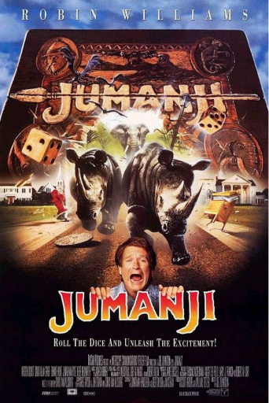
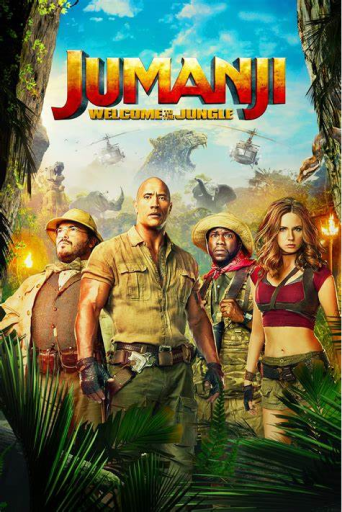

Voici la liste des films important dans le contexte du sujet
Dans le film original Jumanji de 1995, deux enfants découvrent un jeu de société mystérieux qui libère des éléments dangereux de la jungle à chaque lancer de dés. Avec l'aide d'Alan Parrish, un homme emprisonné dans le jeu pendant des décennies, ils doivent terminer la partie pour remettre les choses en ordre. Ce film allie aventure et magie, en transformant le jeu de société en une expérience immersive où chaque tour amène des défis imprévisibles. Jumanji explore l'idée des jeux comme portails vers des mondes fantastiques, un thème récurrent dans l'évolution des jeux de société modernes.
Jumanji : Welcome to the jungle
Dans cette version modernisée du classique de 1995, quatre adolescents découvrent un jeu vidéo mystique qui les aspire littéralement dans son monde virtuel. Transformés en avatars dotés de compétences spécifiques, ils doivent survivre dans la jungle en résolvant des énigmes et en surmontant des obstacles. Le film combine aventure et humour, tout en explorant la dynamique du travail en équipe. Cette version revisite le concept de jeu de société en intégrant les codes des jeux vidéo modernes.
Dans cette suite, les protagonistes retournent involontairement dans l'univers de Jumanji pour sauver un ami. Cependant, le jeu a changé, offrant de nouveaux décors et défis inattendus. Les personnages se retrouvent échangés dans différents avatars, ce qui ajoute une nouvelle dimension humoristique et stratégique à l’histoire. Ce film illustre l'évolution du jeu de société vers des expériences plus complexes, tout en conservant les éléments classiques de l’aventure et du divertissement.

Adapté du célèbre jeu de société Cluedo, Clue met en scène six invités mystérieux qui se retrouvent dans un manoir pour résoudre une série de meurtres. Chaque personnage représente un pion du jeu, et le film explore les mécaniques de déduction en engageant le spectateur dans une enquête à huis clos. Avec ses multiples fins alternatives, Clue parodie le genre du whodunit tout en offrant un hommage ludique à l’univers des jeux de société.